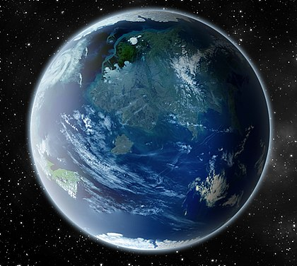

Naboo
Le noyau de Naboo présente une particularité unique. En effet, il n'est pas en fusion, contrairement aux noyaux classiques, mais regorge d'énergie plasmatique. Au fil des âges, un important réseau de tunnel sous-terrain s'est créé, avant d'être inondé et de former un labyrinthe sous-marin sous la surface de la planète. Les routes océaniques qui passent par le noyau sont considérées parfois comme les plus rapides pour se déplacer d'un bout à l'autre de la planète. Grâce à ces importantes quantités d'eau souterraine, la planète Naboo possède un climat tempéré et une flore luxuriante, avec de vastes plaines, des jungles, des marais et des collines herbeuses.

| Apparaît dans : | La Menace Fantôme,L'Attaque des Clones,La Revanche des Siths |
|---|---|
| Environnement : | Planète tellurique |